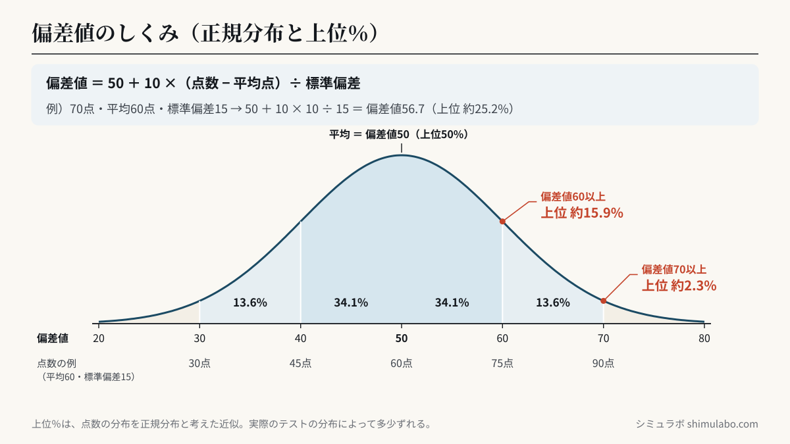
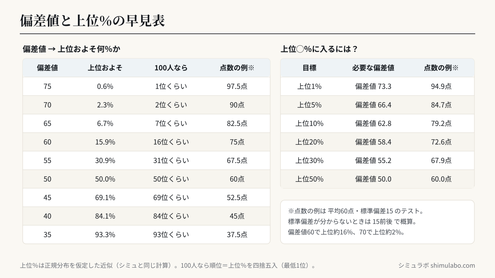

偏差値の計算
計算式
偏差値 ＝ 50 ＋ 10 ×（点数 − 平均）÷ 標準偏差
偏差値 ＝ 50 ＋ 10 ×（点数 − 平均）÷ 標準偏差
偏差値50が平均、60で上位約16％、70で上位約2％が目安。点数の分布が正規分布に近いほど精度が上がります。標準偏差が分からないときは15前後で概算を。






図はタップすると大きく表示されます。資料やSNSに使うときは、出典「シミュラボ」とページのURLを添えてください。
よくある質問
- 上位％はどう出す？
- 正規分布を仮定した近似で算出しています。実際の分布で多少ずれます。
- データは送信されますか？
- いいえ。計算はすべてブラウザ内で完結します。